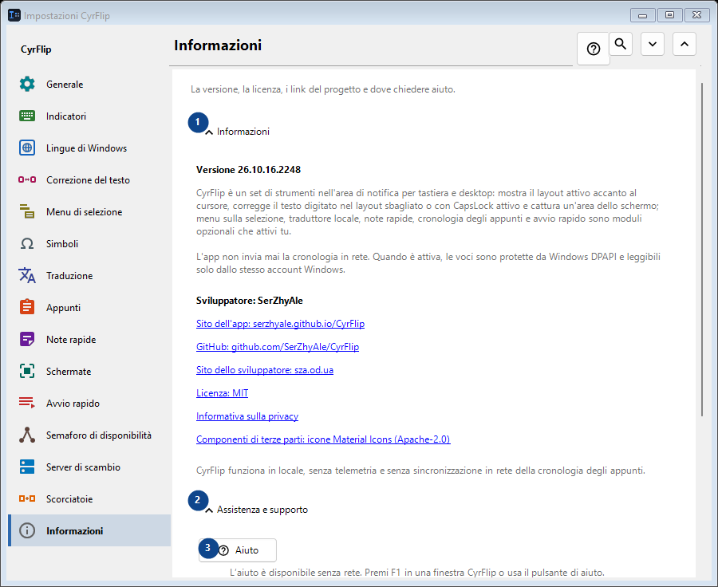
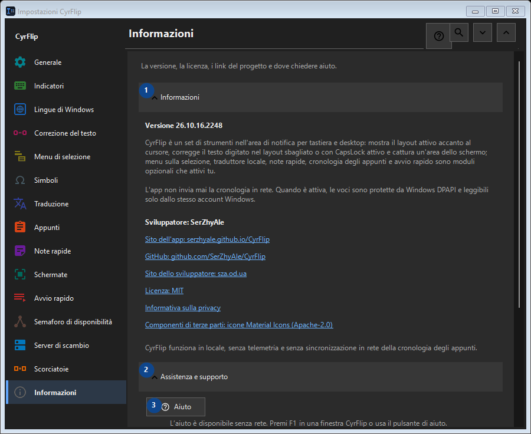

Informazioni
A cosa serve
La versione, la licenza, i link del progetto e dove chiedere aiuto.


Ordine delle operazioni
Le impostazioni si applicano subito. Non serve un ordine preciso; usa i gruppi qui sotto.
Elementi
1. Informazioni
Usa questo comando per l’azione indicata. Leggi ogni richiesta di conferma prima di accettare.
Le tue scorciatoie2. Assistenza e supporto
Usa questo comando per l’azione indicata. Leggi ogni richiesta di conferma prima di accettare.
Le tue scorciatoie3. Aiuto
L’aiuto è disponibile senza rete. Premi F1 in una finestra CyrFlip o usa il pulsante di aiuto.
Le tue scorciatoie4. Mostra la guida iniziale..
Scopri CyrFlip e configuralo.
Le tue scorciatoie5. Diagnostica la posizione del cursore...
Crea un report locale su come Windows e UI Automation vedono il cursore. Serve solo se in una determinata app l'indicatore manca o è fuori posto.
Le tue scorciatoie6. Invia i log all'autore..
Raccoglie i log di CyrFlip in un unico archivio e apre un messaggio all'autore con quell'allegato. Il messaggio lo invia lei - CyrFlip non trasmette nulla in rete. La cronologia degli appunti non finisce mai nell'archivio.
Le tue scorciatoie